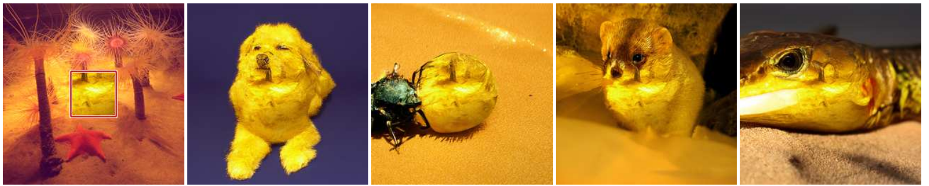
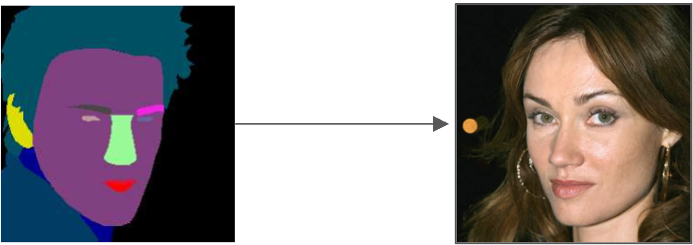

Semi-supervised multi-domain translation with diffusion models
1. LITIS, Université de Rouen Normandie
2. LITIS, INSA Rouen Normandie
3. GREYC, Université Caen Normandie
Work published in TMLR in sept. 2025. Slides available at smnbrnrd.github.io/multidomaindiffusion.
Domain translation
Definition
Domain translation is the task of transforming samples from one domain into samples of another domain, while preserving semantic content. A typical example is image-to-image translation where the task is to convert images from one style to another.

Domain translation
Formal definition
- 2 data domains: a source domain $\mathcal{X}$ and a target domain $\mathcal{Y}$
- Domain translation (DT) function $f: \mathcal{X} \rightarrow \mathcal{Y}$ s.t. $$\mathbf{y} = f(\mathbf{x}) \quad \forall \text{ corresponding pairs } (\mathbf{x}, \mathbf{y}) \in \mathcal{X} \times \mathcal{Y}$$
- $\mathbf{x}$ and $\mathbf{y}$ are representations of the same sample in both domains
- The goal is to learn the DT function $f$ from the data
Important question: do we have pairs for training?
- Supervised: corresponding pairs $(\mathbf{x}, \mathbf{y})$ available for training
- Unsupervised: no corresponding pairs available for training
Domain translation
Examples of unsupervised image-to-image translation tasks
Source: Zhang et al., ICCV, 2023 (ControlNet)
Source: Sandfort et al., Scientific Reports, 2019
Source: Richardson et al., CVPR, 2021 (pixel2style2pixel)
Source: Zhu et al., ICCV, 2017 (CycleGAN)
Multi-domain translation
- Multi-domain translation (MDT) extends DT to multiple domains
- A set of more than 2 domains: $$ \mathcal{D} = \{\mathcal{D}_1, \mathcal{D}_2, \ldots, \mathcal{D}_N\}, \quad N > 2 $$
- No specific source or target domains
- Each sample $\mathbf{x}$ has a representation $\mathbf{x}^{(j)} \in \mathcal{D}_j$ (view)
- MDT aims to learn a function $$f_{S,\bar{S}} : S \rightarrow \bar{S}$$ with $S \in \mathcal{P}(\mathcal{D})$, $\mathcal{P}(\mathcal{D})$ being the power set of $\mathcal{D}$ and $\bar{S} = \mathcal{D} \setminus S$
Semi-supervised multi-domain translation
- The more domains we have, the harder it is to ensure full supervision:
- Rapidly expensive and time-consuming
- Prone to labelling errors
- Do we have access to the same domains for all samples?
- Semi-supervised MDT:
- Being able to train from data with missing views
- Being able to predict from any subsets of domains
Semi-supervised multi-domain translation
Challenges : models should not be limited to specific translation directions
- DT setting with $N$ domains : $N \times (N-1)$ translation directions to be learned
- MDT setting with $N$ domains : $2^N$ possible combinations
Semi-supervised multi-domain translation
Challenges : control over diversity
- Generative tasks often need the model to produce diverse outputs
- Adding conditions as inputs should allow for more control over the generated outputs
Semi-supervised multi-domain translation
Challenges : evaluation?
- How to evaluate the quality of generated outputs within each domain?
- How to evaluate the quality of generated outputs across multiple domains?
Semi-supervised multi-domain translation
Challenges : evaluation?
Sample-wise quality metrics:
- Peak Signal-to-Noise Ratio (PSNR): pixel-level comparison
- Structural Similarity Index (SSIM): structural comparison
- Learned Perceptual Image Patch Similarity (LPIPS): deep feature comparison
Limited when the generated images may be far from the condition:
Semi-supervised multi-domain translation
Challenges : evaluation?
Distribution-wise quality metrics:
- Inception Score (IS)
- Fréchet Inception Distance (FID)
- Kernel Inception Distance (KID)
Does not check relevance against the condition:
Unconditional generation
Four main types of generative models:
- Generative Adversarial Networks (GANs)
- Variational Autoencoders (VAEs)
- Normalizing Flows (NFs)
- Diffusion Models (DMs)
For the image generation tasks considered in this work, VAEs and NFs do not achieve a sufficient level of quality.
Multi-domain translation as Conditional generation
Supervised domain translation with GAN
- Vanilla GAN : learn to generate data by training 2 neural networks -- the generator $G$ and the discriminator $D$ -- in competition with each other.
- Pix2Pix : Conditional GAN that learns a mapping from input images to output images, using paired training data.
Multi-domain translation as Conditional generation
Unsupervised domain translation with GAN
- CycleGAN : learns to translate images from one domain to another without paired examples.
- StarGAN : learns to perform image-to-image translation for multiple domains using a single model.

Multi-domain translation as Conditional generation
Limitations of existing GAN-based methods
- Can not take several domains as input conditions
- Can not generate multiple views at once
- Adversarial learning: known to be particularly unstable to train
- Domain definition may be restrictive (e.g. only faces)
Multi-domain translation as Conditional generation
Denoising Diffusion Probabilistic Models (Ho et al., NeurIPS, 2020)
- Diffusion models are denoising models that learn to reverse a diffusion process.
- Key idea is that the forward diffusion process is fixed to a Markov process that gradually adds Gaussian noise
- $q(\mathbf{x}_t | \mathbf{x}_{t-1}) := \mathcal{N}(\mathbf{x}_t ; \sqrt{\alpha_t} \mathbf{x}_{t-1}, (1 - \alpha_t) \mathbf{I})$ with the $\alpha_t$ being predefined values to control the noise level at each step
- The model is trained to reverse the diffusion process, i.e. to give $p_\theta(\mathbf{x}_{t-1} | \mathbf{x}_t)$
Multi-domain translation as Conditional generation
Denoising Diffusion Probabilistic Models (Ho et al., NeurIPS, 2020)
Training procedure:
- Forward diffusion: DDPM formulation allows to compute $\mathbf{x}_t$ directly s.t. $\mathbf{x}_t = \sqrt{\bar{\alpha}_t} \mathbf{x}_0 + \sqrt{1 - \bar{\alpha}_t} \epsilon$
- The model is trained to predict $\epsilon$, the noise used to compute $\mathbf{x}_t$
- The loss function is a MSE between the predicted noise $\hat{\epsilon}$ and the true noise $\epsilon$

Multi-domain translation as Conditional generation
Denoising Diffusion Probabilistic Models (Ho et al., NeurIPS, 2020)
Generation procedure:
- For each $t=T..0$, the model predicts $\hat{\mathbf{\epsilon}}$ and use it to recover $\hat{\mathbf{x}}_{0} = \left(\mathbf{x}_t - \alpha_t \hat{\mathbf{\epsilon}}\right) / \sqrt{\bar{\alpha}_t}$
- The predicted $\hat{\mathbf{x}}_{0}$ is re-noised to obtain $\mathbf{x}_{t-1}$, that is used as input of the next iteration
- The process is repeated until the final image $\mathbf{x}_0$ is obtained
Multi-domain translation as Conditional generation
Multi Source Diffusion Models (Mariani et al., ICLR, 2023)
- Extension of diffusion models to multi-domain conditional generation
- Conditioning is performed by concatenating domain to generate with the available conditions
- During generation, conditions are the noisy versions of the available views, $\forall t \in [T, 0]$
All domain configurations possible, fully supervised
Multi-domain translation as Conditional generation
Unified Multi-Modal Conditional Score-based Generative Model (Meng et al., arXiv, 2022)
- Similar to MSDM but with a clean condition during training and generation
- A code is given as input to specify the domain to generate and the available conditions
- The model is trained to denoise only the part corresponding to the domain to generate
All domain configurations possible, fully supervised
Multi-domain translation as Conditional generation
Limitations of existing diffusion-based methods
- Fully supervised: need all views for training
- No control on diversity of generated outputs
- May have homogeneity issues
Multi-Domain Diffusion (MDD)
Key idea: different noise levels for each domain
- As with MSDM and UMM-CSGM, all views are concatenated
- Training : missing views are replaced by pure noise
- Generation : clean conditions
Multi-Domain Diffusion (MDD)
Semi-supervised training
- Missing views are replaced by pure noise, conditions have different levels of noise
- The model learns to denoise only the parts corresponding to available views
- This encourages learning the joint data distribution by using less noisy domains to reconstruct noisier one
Multi-Domain Diffusion (MDD)
Generation
- $\phi(t)$ allows to define different noise strategy on the conditions
- Low $\phi(t)$ enforce high fidelity to the conditions (similar to clean conditions as in UMM-CSGM)
- High $\phi(t)$ allows more diversity (similar to noisy conditions as in MSDM)

Experiments and results
The Blender 3 Domain Translation (BL3NDT) dataset
- Synthetic dataset with 3 domains: cube, pyramid and icosphere
- 40500 images of size 64x64
- Images of 3D objects rendered with multiple generation parameters and with semantic inversion
Experiments and results
The Blender 3 Domain Translation (BL3NDT) dataset
- 3 experiments :
- Fully supervised training with all views available
- Semi-supervised training with $N%$ of samples with one missing view
- Bridge setting with $50%$ of (cube, pyramid) and $50%$ of (pyramid, icosphere) for training
- Comparison with MSDM and UMM-CSGM and adapted versions for semi-supervised settings (missing views are replaced by noise)
- Evaluation with pixel-wise Mean Average Error since only one valid solution here
- Exp. 1 : Clean condition gives better results
- Exp. 2 : MDD robust to decreasing supervision
- Exp. 3 : the most challenging, showing sensitivity to domain synchronization
Experiments and results
The Blender 3 Domain Translation (BL3NDT) dataset
The small position shift of the generated pyramid propagate to the icosphere
Experiments and results
The CelebAMask-HQ dataset augmented with sketches
- 2 domains (faces and semantic masks) from the CelebAMask-HQ dataset (Lee et al., CVPR, 2020)
- 1 domain (sketches) generated with Face Sketch Synthesis in the Wild (Chen et al., ACCV, 2018)
- 30000 images of size 256x256
Experiments and results
The CelebAMask-HQ dataset augmented with sketches
- (sketch, mask) $\rightarrow$ face translation to assess quality of realistic face generation
- Evaluation metrics : LPIPS, SSIM
- Clean condition gives better results (aligns with findings from literature)
- UMM generate more realistic images than MSDM but often oversaturated
- MDD gives SotA results for this task
Experiments and results
The CelebAMask-HQ dataset augmented with sketches
- mask $\rightarrow$ (face, sketch) to explore the control-diversity trade-off
- Generated images are diverse and aligned between domains
Experiments and results
The BraTS 2020 medical dataset
- 4 MRI modalities (FLAIR, T1, T1ce, and T2), and 3D tumor segmentations (with 4 classes)
- Initially, for a MICCAI 2020 challenge on multimodal brain tumor segmentation
- We used 2D slices of size 256x256 with binary semantic segmentation masks.
Experiments and results
The BraTS 2020 medical dataset
- Similar experimental protocol as in exp. 2 of BL3NDT...
- ... but more complex and realistic and with more domains
Conclusion
Yes...
- MDD is the only method that can perform semi-supervised multi-domain translation
- Any subset of views as input and as output, for training and for generation
- One model for all translation configurations
- Very good performances, even against SotA methods for fixed translation direction and/or fully supervised training
But...
- No consensual evaluation metric for this task
- Combining information from an increasing number of domains within a single latent vector could become a bottleneck
- "One model" but with an encoder and a decoder per domain (concatenation and diffusion in the latent space)
- Shared general-purpose pretrained encoder-decoder is feasible but challenging with heterogenous domains (e.g. text and images)
Other related work
TD-Paint : transposition of MDD ideas to inpainting task
- Variable noise levels at the pixel level (instead of per domain as in MDD)
- Only masked pixels are noised, the rest is kept clean